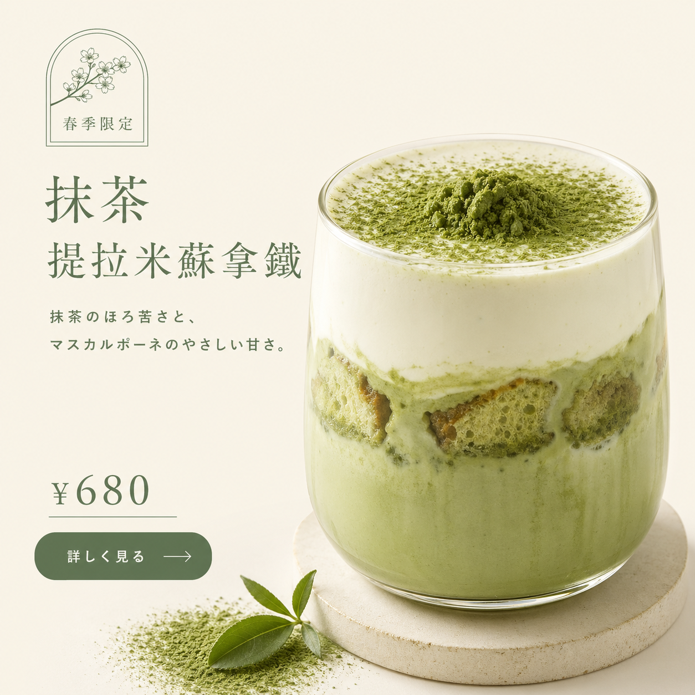
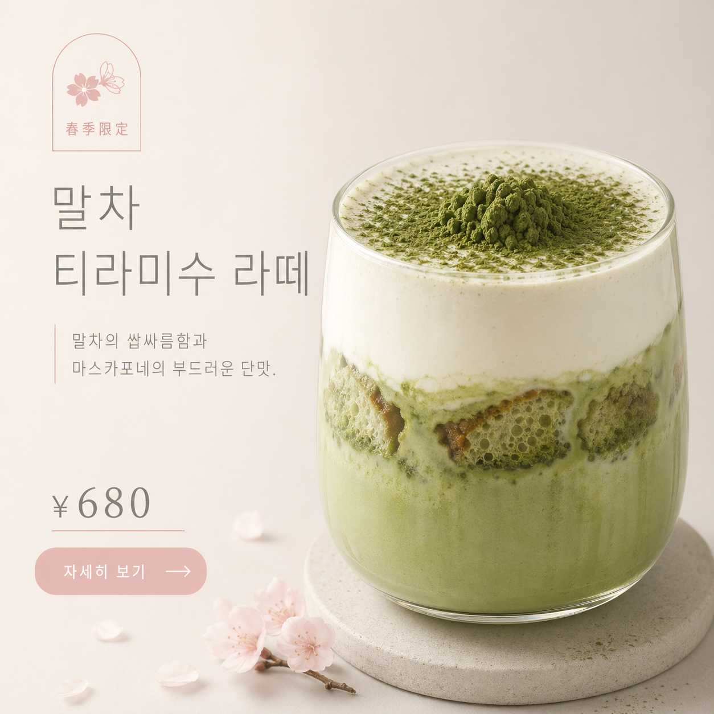
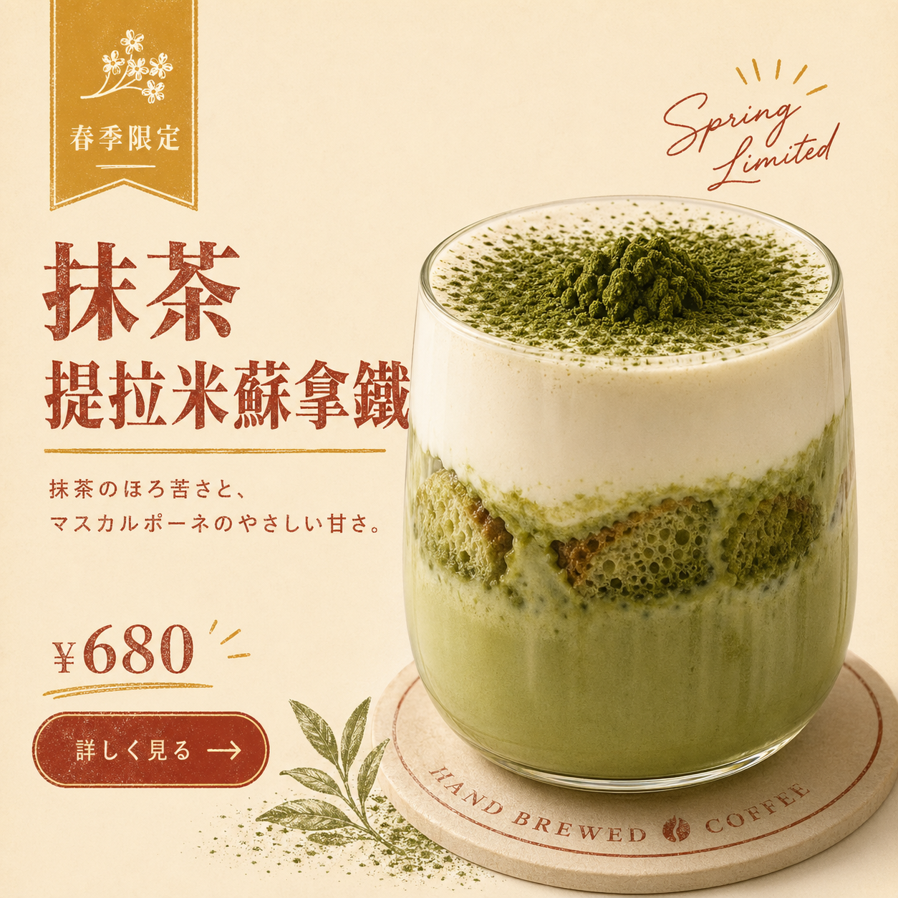

從 brief 到完稿的 prompt 結構
用 brief 六件套把模糊需求結構化成 AI 能穩定執行的 prompt。45 分鐘、5 個小循環，每 5–8 分鐘交一個小產出。
- 1 份填好的 brief 六件套（業種 + 商品 + 客群 + 訴求 + 必要元素 + 風格 preset）
- 1 段可貼到 AI 的完整 prompt
- 1 張 1:1 完稿（4 項驗收 ≥ 3 項通過）
完成這 3 件就算過關。試跑包、商業案例、常見錯誤、完整模板都收在頁尾「講師備註」折疊區，可帶回家慢慢看。
今天要解決的問題
「要幾個字？主標寫什麼？商品放哪？配色？」——腦子又開始混亂、卡關。
這個卡點不是他不會用 AI，是他還沒把腦中模糊想法結構化。本單元給他一個固定模板——brief 六件套——填好就是 AI 能穩定吃的指令。
接下來 5 個小循環、每個 5–8 分鐘，你會逐欄學會這六件套，最後組成你自己的第 1 張完稿。
AI 不是設計師、你是需求方
同樣丟「幫我做廣告」給 AI，為什麼每次跑出來都不一樣？
幫我做一張好看的咖啡店廣告，1:1 尺寸
→ AI 沒拿到：哪種咖啡店？什麼商品？給誰看？什麼風格？什麼版型？什麼配色？這 6 件你沒講，AI 全部自己決定。每次決定不一樣，所以每張都不一樣。
📷 老師預跑的兩張對照圖（建議自己跑完再展開、避免被牽著鼻子）


本頁圖片為 AI 生成練習作品、不可商用。
這不是 AI 不夠聰明的問題——是 你還沒做需求方該做的事。需求方的工作是把腦中模糊想法**結構化成清單**，AI 才能穩定產出。
要做什麼：
- 打開 Gemini 或 ChatGPT，丟上面那個壞例子，等 30 秒
- 同對話再丟下方的「結構化版」prompt，等 30 秒
- 把兩張截圖並排（手機分割 / 印出皆可）
展開結構化版 prompt（複製即用）
請產出 1:1 商業橫幅、用「A 主視覺版」風格： 【業種】手沖咖啡店 【商品】春季限定 抹茶提拉米蘇拿鐵 ¥680 【客群】25-35 歲女性、注重生活風格 【訴求】手作、季節感、療癒 【必要元素】中央杯子 / 左上季節 tag / 主標 2 行 / 左下價格 【風格 preset】鼠尾草綠 + 奶油白；明朝體粗體；手作感 ⚠️ 字體名稱（Shippori Mincho 等）僅為渲染指令、不要寫進圖中
完成物：兩張並排截圖（不存檔也行、看完就好）
通過標準：能口述出「兩張在哪裡明顯不同」至少 1 處
卡住怎麼辦？
- AI 額度用完 → 切換另一個平台（Gemini ↔ ChatGPT）；或看頁尾「商業案例」區的老師預跑對照圖
- 等很久不出圖 → 取消重跑、或用更短版本「春季抹茶拿鐵廣告 1:1 鼠尾草綠」先跑出個東西就好
- 還卡 → 跳 cycle 2，這個對比實驗回家補
你看到的差異中，至少有 1 個是「結構化版有講、模糊版你沒講、所以 AI 在猜」的嗎？
能 → 進 cycle 2 ｜ 不能 → 重看你的兩張，找出 AI 在哪裡自由發揮
你不講的，AI 一定自己決定。決定品質取決於它的訓練資料、不是你的需求。
→ 下一循環：那要講哪些？最重要的前 3 件事——業種、商品、客群。
先講「賣什麼給誰」——前 3 欄定錨整張圖
業種、商品、客群——這 3 欄漏掉任一個，畫面會壞在哪裡？

業種：服務業→ 太抽象，AI 不知該用咖啡感、銀行感、還是醫美感商品：我的新商品→ AI 只能在畫面隨便擺一個物件客群：一般大眾→ 配色、字體、文案調性全部變平均值（= 沒特色）
這 3 欄是 AI 拉視覺詞彙庫的索引鍵：
- 業種 → 拉哪一組詞彙庫（餐飲 / 美妝 / App 完全不同庫）
- 商品 → 主視覺物件長什麼樣（瓶？罐？杯？mockup？）
- 客群 → 整體情緒氣質（25 歲女 IG 族 vs 45 歲男企業主，配色字體完全不同）
- 從你最熟的業種開始（自家品牌 / 客戶 / 副業皆可）
- 填具體商品名 + 規格 / 容量 / 價格
- 寫 2-3 項客群描述（年齡 + 生活風格 / 痛點）
brief 卡片前 3 欄填好
- 業種能對應到 10 業種庫（餐飲 / 美妝 / App / 旅遊 / 教育 / 活動 / 醫美 / 寵物 / 居家 / 健身）之一
- 商品有具體名稱、第三人能想像形狀
- 客群至少 2 項描述、能想到 2-3 個具體的人
卡住怎麼辦？
- 選不出業種 → 直接借「手沖咖啡店」當練習素材，課後換自己的
- 商品名只想得到「主打商品」 → 抄範例「春季限定 抹茶提拉米蘇拿鐵 ¥680」，改成你的數字
- 客群想不出來 → 想一個你最常服務的客戶（不是「一般大眾」）寫下來
- 還卡 → 跳 cycle 3 寫訴求，這 3 欄回家補
| 業種 | |
|---|---|
| 商品 | |
| 客群 |
- 業種：能不能在 10 業種庫中圈出 1 個？
- 商品：第三人看完能不能畫出商品大致形狀與大小？
- 客群：能不能聯想到 2-3 個具體的人？
3 條全過 → 進 cycle 3 ｜ 任一不過 → 補完再走
前 3 欄是事實陳述——你賣什麼給誰、不是品味問題。寫得越具體，AI 的視覺詞彙就拉得越準。
→ 下一循環：事實講完了，接下來「感覺」與「骨架」要分開——訴求 vs 必要元素。
訴求 vs 必要元素——一個管溫度、一個管骨架
「療癒」「商品中央」「手作感」「左下放價格」——哪些是訴求？哪些是必要元素？
訴求：好用、療癒、商品要放中間、左下價格、季節感
→ 這把「訴求」（療癒、季節感）跟「必要元素」（商品中間、左下價格）混了，又夾「好用」這種功能描述（兩邊都不是）。AI 會把這串當成標籤雲、結果什麼都顧到、什麼都不重。
定義：3-5 個情緒關鍵字（不是功能、不是位置）
管什麼：畫面整體的「溫度感」——療癒 vs 刺激、手作 vs 科技、職人 vs 大眾
例：手作、季節感、療癒、留白、職人
定義：對應你選的版型（A-H）、列出每個槽位放什麼
管什麼：畫面的「骨架」——什麼物件、放在哪、占多大
例：中央杯子 70%、左上季節 tag、左下價格 + CTA
關鍵分辨：訴求用「形容詞」，必要元素用「名詞 + 位置 + 占比」。混淆會讓 AI 不知道哪些要顯形（畫面）、哪些要影響整體（氛圍）。
要做什麼：把下方 6 個詞分到「訴求」「必要元素」「丟掉」三類，並指出 2 個應該丟掉的（功能描述）
① 療癒 ・ ② 主視覺商品 80% ・ ③ 多功能
④ 手作感 ・ ⑤ 左上季節 tag ・ ⑥ 大字優惠
完成物：3 欄分類（訴求 / 必要元素 / 丟掉）
通過標準：訴求 = ①④、必要元素 = ②⑤、丟掉 = ③⑥（含理由 1 句）
| 訴求 | |
|---|---|
| 必要元素 | |
| 丟掉（為什麼） |
把你 cycle 2 寫的商品、想 3 個訴求形容詞 + 2 個必要元素位置——你能不能寫得出來且不混淆？
能 → 進 cycle 4 ｜ 不能 → 看上面分類題的標準答案，重做一次
訴求是形容詞，必要元素是名詞 + 位置 + 占比。混在一起寫，AI 會猜你是想畫氛圍還是畫骨架。
→ 下一循環：訴求講完，最後一塊拼圖是「風格 preset」——配色、字體、調性。
📚 延伸：8 版型 → 必要元素對照表（按需展開）
需要寫必要元素時再展開。版型結構是固定的，變的只是商品內容：
| 版型 | 必要元素清單模板 |
|---|---|
| A 主視覺版 | 主角商品 80-90% / 文字 ≤ 20%（主標 1 行 ≤ 12 字）/ 黃金視覺位置（中上偏左 1/3）放亮點 |
| B 橫幅版 | 左 50% 商品 70%+ 高度 / 右 50% 文字（主標 + 短標語 + CTA）/ 主次分明 |
| C 社群版 | 主角商品 70%+ / 大量留白 / 文字 < 30% |
| D 系列版 | 上半 70% 3 款並列 / 下半 30% 每款 1 行特色 + 信任標籤 / 統一色調 |
| E 禮盒版 | 禮盒外包裝 70%+（含緞帶 / 紋飾 / 標籤）/ 深色背景 / 金色點綴 / 品牌名 + 系列名 |
| F 特寫版 | 商品 95%+ 極致特寫 / 動態瞬間（流心 / 拉絲 / 蒸氣）/ 光線強化質感 / 零文字或極少品名 |
| G 促銷版 | 上半 60% 大字優惠 + 限時 / 下半 40% 商品 + CTA / 強對比色 / 急迫感視覺元素 |
| H 生活版 | 商品 30-40%（配角）/ 人的痕跡（咖啡杯 / 書 / 毛毯）/ 自然光 / 情境文案（手寫感） |
不確定選哪個版型？回 CH2-1「目的 → 版型」3 問速查表。
風格 preset 不是寫「日系」就好
「日系風」「極簡」「高級感」這 3 個詞，夠 AI 用嗎？
風格 preset：極簡風
→ 「極簡」是標籤、不是指令。AI 還是要猜配色（米白？灰？黑白？）、字體（哪種襯線？哪種無襯線？）、調性（冷靜？暖？）。最後產出仍然不穩定。
風格 preset 必須包含 3 件套：配色 + 字體 + 調性。少一件 AI 還是要猜：
- 配色 → 具體色名或 hex，≤ 3 色（不是「清新配色」）
- 字體 → 主標 + 內文各 1 種具體名稱（不是「好看的字體」）
- 調性 → 3 個以上具體形容詞（不是「美」「酷」「高級」）
要做什麼：為你 cycle 2 的商品挑 1 種 preset，把 3 件套填具體
偷懶捷徑：直接抄日系 preset（鼠尾草綠 + 奶油白 + 抹茶綠｜主標 Shippori Mincho、內文 Noto Sans JP｜手作、季節感、職人）
完成物：3 件套都填具體
通過標準：配色有色名 / 字體有名稱 / 調性有 3 個形容詞
卡住怎麼辦？
- 不知道配色怎麼選 → 抄日系預設（鼠尾草綠 + 奶油白），多數業種都吃
- 不知道字體名稱 → 主標填「Shippori Mincho 明朝體」、內文填「Noto Sans TC」就好
- 調性想不出來 → 從你 cycle 3 寫的訴求拿過來
- 還卡 → 跳 cycle 5 組 prompt，preset 用日系預設
| 配色 ≤ 3 色 | |
|---|---|
| 字體 | |
| 調性 3 詞+ |
你的 3 件套是不是都用了「具體名稱 / 數值 / 形容詞」，沒有任何一件是「極簡」「日系」這種標籤？
是 → 進 cycle 5 ｜ 否 → 把標籤拆成具體值（「極簡」拆成「米白 + 黑 + 灰、Inter + Noto Sans、留白、無裝飾」）
preset 是 3 件套——配色 + 字體 + 調性。少一件，AI 仍然要猜。
→ 最後一個循環：六件都填好了，把它們組裝成 AI 能吃的 prompt。
📷 同 brief × 3 preset 對照（看「結構不變、表象切換」）
同 1 份 brief（春季抹茶提拉米蘇拿鐵 ¥680、A 主視覺版）+ 3 種 preset，畫面結構一樣、表象完全不同：



本頁圖片為 AI 生成練習作品、不可商用。
📚 延伸：11 種風格 preset 速查（按需展開）
每種 preset 都有具體配色 / 字體 / 調性可直接複製：
| preset | 配色 | 字體 + 調性 |
|---|---|---|
| 日系（基準） | 鼠尾草綠 + 奶油白 + 抹茶綠 | Shippori Mincho + Noto Sans JP / 手作、季節感、留白、職人 |
| 韓系 | 莫蘭迪灰 + 粉色 + 米白 | 細黑體 + 英文襯線 / 精緻、高級、簡約 |
| 美式復古 | 芥末黃 + 磚紅 + 奶油白 | 粗黑襯線 + 手寫字 / 懷舊、手作、溫度 |
| 矽谷科技 | 深藍 + 白 + 螢光綠 | Inter / SF Pro / 效率、現代、極簡 |
| 北歐極簡 | 米白 + 灰 + 木色 | 無襯線細體 / 留白、自然、平靜 |
| 歐陸法式 | 奶油 + 玫瑰金 + 深棕 | 襯線優雅體 / 細緻、女性、優雅 |
| 美式海報 | 正紅 + 黃 + 黑 | 大字粗黑 / 衝擊、促銷、視覺強 |
| 瑞士排版 | 黑 + 白 + 紅 | Helvetica / 結構、秩序、現代 |
| 手繪童趣 | 馬卡龍多色 | 圓潤手寫 / 童趣、活潑、親切 |
| 工業風 | 深灰 + 鐵鏽橘 + 黑 | 等寬體 / 粗獷、機械、實用 |
| 街頭潮流 | 螢光 + 黑 + 白 | 塗鴉粗體 / 反叛、年輕、街頭 |
選法：跟商品 / 客群配對。25 歲 IG 女族 → 韓系或日系；30 歲科技創業 → 矽谷科技或瑞士排版；40 歲送禮族 → 歐陸法式或日系職人。
把六件套組成 AI 能吃的 prompt
6 欄都填好了，怎麼組成一段 AI 能穩定執行的 prompt？
兩條路、選一條：
- 路徑 A（推薦、最快）：CH2-1 用 3 問選版型 → 翻
8-prompt-examples.md對應段、複製預寫好的 prompt → 用六件套替換變數空格 → 5 分鐘出圖 - 路徑 B（適合進階 / 變化）：套以下空白模板、把 cycle 2-4 寫的內容貼進去 → 加防字體外洩 footer → 丟 AI
要做什麼：把 cycle 2-4 的學員產出（業種 / 商品 / 客群 / 訴求 / 必要元素 / 風格 preset）填入下方模板
必加：末尾 1 句「字體名稱僅為渲染指令、不要寫進圖中」防 AI 把字體名當文字畫進圖
請產出 1:1 商業圖、用「{版型代號 + 中文名}」風格：
【業種】{cycle 2 業種}
【商品】{cycle 2 商品}
【客群】{cycle 2 客群}
【訴求】{cycle 3 訴求 3-5 詞}
【必要元素】（對應你選的版型結構 A-H）
- {cycle 3 必要元素：物件 + 位置 + 占比}
【風格 preset】
- 配色 ≤ 3 色：{cycle 4 配色}
- 字體：{cycle 4 字體}
- 視覺調性：{cycle 4 調性}
【尺寸】1:1
⚠️ 字體名稱（Shippori Mincho / Noto Sans JP / Helvetica 等）僅為 AI 渲染指令、絕對不要寫進圖中作為文字
完成物：1 段可複製貼上的完整 prompt
通過標準：6 欄全填、有版型代號、末尾有防字體外洩 footer
你的 prompt 裡，6 欄都齊了嗎？版型代號（A / B / C / D / E / F / G / H 任一）有寫嗎？末尾防字體外洩 footer 有加嗎？
3 條全過 → 進整合任務跑 AI ｜ 任一缺 → 補完再進
prompt 不是寫文案、是組裝六件套。模板照填、AI 就會穩定產出。
→ 整合任務：把這份 prompt 丟 AI、跑出你的第 1 張完稿、做 4 項驗收。
📷 整合任務跑出來大概長什麼樣（A 主視覺版範例）

本頁圖片為 AI 生成練習作品、不可商用。
整合任務 — 跑你的第 1 張完稿
把 cycle 5 的 prompt 整段複製，貼到 Gemini 或 ChatGPT，按送出。
不要中途改 prompt、不要追問。等第一張結果出來就好。
- 版型對應你選的骨架（大致結構在、元素位置大方向正確）
- 字階三層分明（主標 > 副標 > 內文，能看出層級）
- 配色 ≤ 3 色（沒被 AI 自由加色）
- 必要元素大致都在（不要求每項完美、但不能缺超過 2 項）
對照你原本的 brief，找出至少 2 項「跟預期一致 / 不一致」的具體事實（不是「感覺」）。
1 張 1:1 完稿（截圖存檔）+ 1 份 4 項驗收結果 + 2 項觀察
4 項驗收 ≥ 3 項通過 + 2 項觀察都有具體事實（不是「不錯」「差一點」）
卡住怎麼辦？
- 4 項驗收 ≤ 1 項過 → 重組 prompt（檢查是不是缺欄位）、再跑一次
- 有 2-3 項不過 → 記下不過的項目、本次先存檔、進 PRAC2 再迭代
- 跑出來文字亂碼 / 字體名外洩 → 翻 instructor-note 折疊區的「Tip 1 文字亂碼處理」
- 跑出來其他症狀 → 翻 CH5-1 § 卡關 troubleshooting 速查，8 種症狀都有對應修正話術
| 版型對應 | |
|---|---|
| 字階三層 | |
| 配色 ≤ 3 色 | |
| 必要元素 | |
| 觀察 1 | |
| 觀察 2 |
收束 — 整合判斷題
講清楚 AI 才能做對。六件套缺一個 → AI 就要猜一個 → 結果偏離。填好六件套的 2 分鐘，比跑 10 次猜猜樂省時間。
→ 下個單元 PRAC2：把這套 brief 六件套密集應用到你自己的業種——30 分鐘跑 2-3 張完稿，至少 1 張用非日系 preset，親眼看到「結構不變、表象切換」。
📋 講師備註與延伸資料（學員可跳過、課後或卡關時展開）
本區內容：教學意圖、試跑包準備清單、商業案例完整 brief、常見錯誤 3 條、完整 prompt 模板與 Tip 1/2/3。學員主流程已不需要展開，僅供講師備課與學員課後查閱。
① 教學意圖（為什麼這樣設計這 5 個循環）
本單元是 PM 思維最重要的「工作語言」訓練。六件套不是套路作業，是需求方的結構化清單——跟設計師、客戶、老闆溝通需求都該用這套。
循環順序設計：
- Cycle 1 對比實驗 = 內化「不講就猜」的 AI 特性，建立需求方身份
- Cycle 2 業種 / 商品 / 客群 = 「事實陳述」3 欄，最容易上手
- Cycle 3 訴求 vs 必要元素 = 概念區辨、最常混淆，用分類題訓練
- Cycle 4 風格 preset = 從「標籤」轉「具體值」的訓練
- Cycle 5 組裝 prompt = 把前 4 cycle 的產出拼回完整指令
不是先講完六件套再做練習，是每講一欄就立刻填一欄。學員到整合任務時是「拼回」而不是「從零填」。
② 試跑包準備清單（開課前必備素材）
本單元採用引導發現法，不備固定示範圖。課前備齊以下清單，全部為文字 / 清單 / 印刷品 / 連結：
- Cycle 1 對比實驗 prompt 卡：模糊版（1 行）+ 結構化版（完整版），印 A6 小卡或做 Notion 頁面 QR Code
- Cycle 2-4 brief 六件套填空表：紙本或 Notion 模板
- 10 業種主題庫（
10-industries-brief-library.md）：每業種預寫好 brief 六件套 - 8 版型 prompt 範例（
8-prompt-examples.md）：每版型預寫好「快速啟動 prompt」 - 11 種風格 preset 速查：在 cycle 4 折疊區內已附
- 4 項驗收清單：紙本打勾用
學員自備：自家品牌或客戶情境 1 個 + AI 平台帳號（Gemini Free / ChatGPT Free 擇一） + 可選 Canva Free（後製補字）
備援：
- 學員無工作情境 → 用「咖啡店春季新品 / 手工皂母親節禮盒 / 線上課程招生」預設情境
- AI 配額用盡 → 切換另一平台、或改成「只填 brief 不跑 AI」紙上練習
- 教室時間壓縮至 30 min → 砍 cycle 1 對比實驗（改講師口述示範），保留 cycle 2-5 + 整合任務
明確不準備：固定示範圖（AI 生圖每次有差異、給固定圖反而誤導）；「標準答案 prompt」（目標是學員會寫自己的、不是背範例）。
③ 主線 A｜弄一下咖啡工作室完整 brief 範例
台北單店手沖咖啡，老闆一人兼行銷 + 吧檯。CH1-1 學會 PM 思維，本單元教他六件套：
| 欄位 | 內容 |
|---|---|
| 業種 | 手沖咖啡店 |
| 商品 | 春季限定 抹茶提拉米蘇拿鐵，Regular ¥680 / Tall ¥730 |
| 客群 | 25-35 歲女性、注重生活風格、IG 重度使用者 |
| 訴求 | 手作、季節感、療癒 |
| 必要元素 | 畫面中央偏右：抹茶拿鐵透明玻璃杯；左上：季節限定 tag；主標 2 行：抹茶ティラミスラテ；accent 手寫字：New!；左下：價格 + CTA メニューをチェック |
| 風格 preset | 日系 / 配色：鼠尾草綠 + 奶油白 + 抹茶綠 / 字體：明朝體粗體 + Noto Sans JP / 調性：手作、季節感、職人 |
單元 POV：第二人稱「你」，把學員代入 PM 身份——你坐在電腦前、腦中有需求、打開 AI——六件套就是你的工作清單。
④ 常見錯誤 3 條（學員回家最容易踩的坑）
錯誤 1｜brief 六件套缺欄位（最高頻）
- 現象：學員回家只填 3-4 欄就丟給 AI，發現「怎麼跟我想的不一樣？」
- 原因：以為「大概講一下」AI 就懂。AI 不是讀心術師、是結構化指令執行者
- 解法：每次下 prompt 前跑 6 欄完整檢查清單、任一空白不按送出
錯誤 2｜「必要元素」與「版型」不匹配
- 現象：選 D 系列版（3 款並列）但只填 1 款商品；選 H 生活版卻填「大字優惠」（G 促銷版元素）；選 F 特寫版卻塞了一堆文字
- 原因：把「版型選擇」跟「必要元素列表」當成獨立兩件事，實際上是綁定關係
- 解法：填必要元素前先確認版型 ↔ 商品 ↔ 訴求三角匹配（商品數量 1 / 3+ → 版型不同；商品型態實體 / 數位 → 版型不同；訴求方向抓注意力 / 衝轉換 → 版型不同）
錯誤 3｜風格 preset 寫得太抽象
- 現象：只寫「極簡」「日系」「清新」「高級感」，AI 還是要猜配色 / 字體 / 調性
- 原因：「極簡」「日系」是標籤、不是指令。AI 需要具體參數
- 解法：3 件套必填——配色 ≤ 3 色（具體色名或 hex）+ 字體 2 種（具體名稱）+ 視覺調性（3 個以上具體形容詞）。偷懶捷徑：直接從 11 種 preset 速查表複製整組
⑤ 完整 prompt 模板 + Tip 1/2/3
完整 prompt 模板（含註解版本）：
請生成一張 {ratio} 商業圖、用「{版型代號 + 中文名}」風格：
【業種】...
【商品】...
【客群】...
【訴求】...
【必要元素】（對應你選的版型結構 A-H）
- ...
【風格 preset】
- 配色 ≤ 3 色：...
- 字體：...
- 視覺調性：...
【尺寸】{ratio，預設 1:1}
【禁用】（依版型加，如 G 促銷版禁柔和、H 生活版禁大字促銷）
⚠️ 字體名稱（Shippori Mincho / Noto Sans JP / Helvetica 等）僅為 AI 渲染指令、絕對不要寫進圖中作為文字
Tip 1｜文字亂碼處理
- 主策略：讓 AI 產「空版 + 圖像元素」，文字交給 Canva 後製補字（Canva Free 字型庫免費、可控）
- 若要 AI 直接產文字：限主標 + CTA 兩個元素（細節文字留白）
- Fallback：產完若文字錯誤，同對話內說「請將圖中所有文字替換為 [新文案]」重試
- 日文精準度：ChatGPT（GPT-image-2）通常優於 Gemini
Tip 2｜版權邊界
- AI 產出僅作為參考稿，不得直接商用
- 商用流程：用 Canva 替換為合法授權素材、或 Firefly 重製、或自家拍攝 / 購買素材
- 講義示範與練習產出統一加註：「本頁圖片為 AI 生成練習作品，不可商用」
Tip 3｜Meta-prompting（讓 AI 幫你寫 prompt）
- 適用：第一次寫 prompt、還不熟六件套；風格不熟（如要做「奢華」但不知道配色字體）；整合多頁網站品牌識別
- Meta-prompt 模板：「我想為 [品牌] 設計 [風格] 廣告。請依以下需求產出最終生圖指令。風格：[簡約 / 活力…]；版型：[A-H]；商品：[填]；客群：[填]；訴求：[3 詞]」
- 限制：產出的指令仍需讀懂並驗收。長期還是要會自己寫 brief 六件套